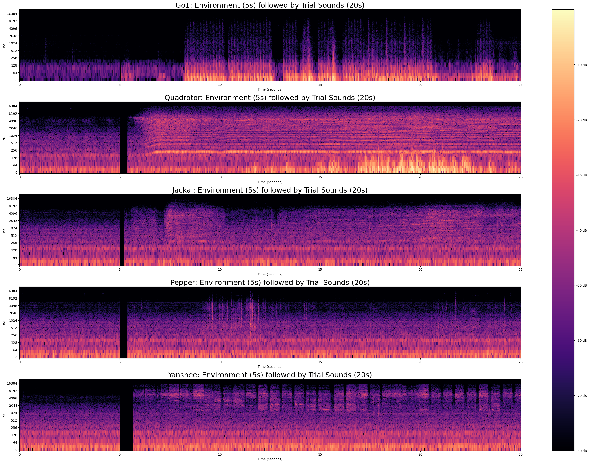

Many people expect robots to move fairly quietly, or make pleasant ''beep boop'' sounds or jingles similar to what they have observed in videos of robots. Unfortunately, this expectation of quietness does not match reality, as robots make machine sounds, known as 'consequential sounds', as they move and operate. With robots becoming more prevalent in the workplace, homes and public spaces, understanding the sounds produced by robots and how these sounds are perceived by people is becoming increasingly important for positive human robot interactions (HRI).
This paper presents the results from 182 participants (858 trials) investigating how human perception of robots is changed by consequential sounds. In a between-participants study, participants in the sound condition group were shown 5 videos of different robots and asked their opinions on the robots and the sounds they made. This was compared to participants in the control condition who experienced completely silent videos. The presence of consequential sounds correlated with significantly more negative perceptions of robots, including increased negative 'associated affects', feeling more distracted, and being less willing to colocate in a shared environment with robots.
Consequential sounds are the unintentional noises that a machine produces itself as it moves and operates i.e 'sounds that are generated by the operating of the product itself'. In terms of robots, consequential sounds are the audible 'noises' produced by the actuators of the robot as the robot performs its normal operation, and the robot can not function without making these sounds.
See the above videos for audible examples of robot consequential sounds.
Sound features (as heard in the videos) are visualised in the below spectrogram, which shows the frequency spectra of the sound stimuli used in the experiment. Each line represents a different robot/trial. The first 5 seconds display the environmental sound baseline, followed by a black strip no sound separator. The remaining 19-20 seconds are the sounds heard by participants (robot + environment sounds) for each trial. Sound intensities between rows have been scaled to allow comparison between robots.

Cohort characteristics for the 182 participants can be seen in the below figures.
Age-group of participants
Participant genders
Frequency that participants experience robots
These additional visualisations are intended to supplement the main figures from the paper.
The below boxen plots show the data distribution differences between 'Consequential Sound' versus 'No Sound' (control) conditions for all 4 question scales: (a) 'Associated Affect' induced by the robot, (b) 'Distracted' by the robot, (c) 'Colocate' with the robot, and (d) 'Like' the robot. Tails of distributions are shown as progressively smaller boxes. Dots represent outliers ranging from a single point (light dot) to small single-digit concentrations of outliers (darker dots). All scales are from (1) = negative perception to (7) = positive perception.
Sound-condition only
Robot plus sound-condition
A copy of the questionnaires used for this research can be found here.
@article{allen2024robotsseenheard,
title={Robots Have Been Seen and Not Heard: Effects of Consequential Sounds on Human-Perception of Robots},
author={Aimee Allen and Tom Drummond and Dana Kulic},
year={2024},
eprint={2406.02938},
archivePrefix={arXiv},
url={https://arxiv.org/abs/2406.02938},
}